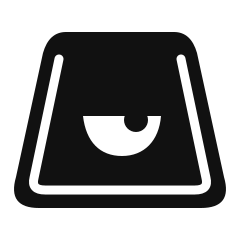

One eye. Same knowing look.
A relaxed upper lid, one rubber-hose pupil, and small reactions.
Three eye treatments on the same silent motion study.
Idle · a quiet glance120 BPM · 28 beats · silent

Original expression, preserved.
The lid stays low. The pupil does the acting; he never becomes wide-eyed.
Motion mockup: the cursor is choreographed. Scrub to inspect any moment. No changes to your live portfolio.